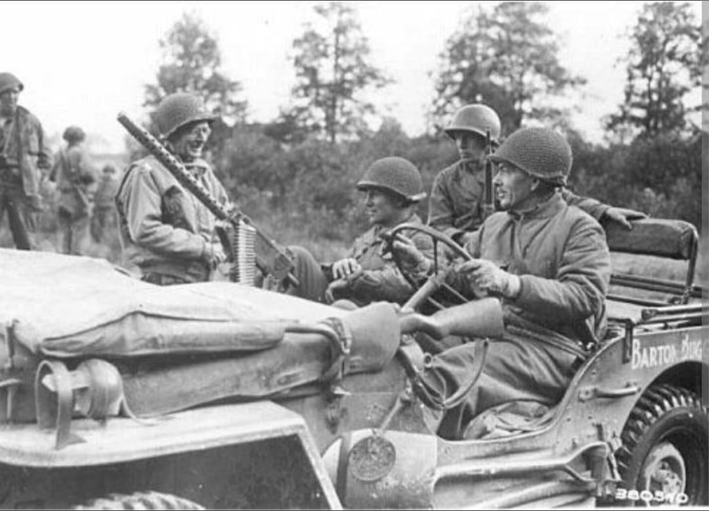
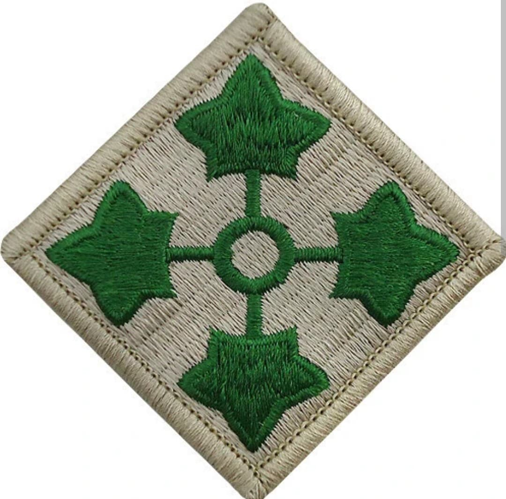
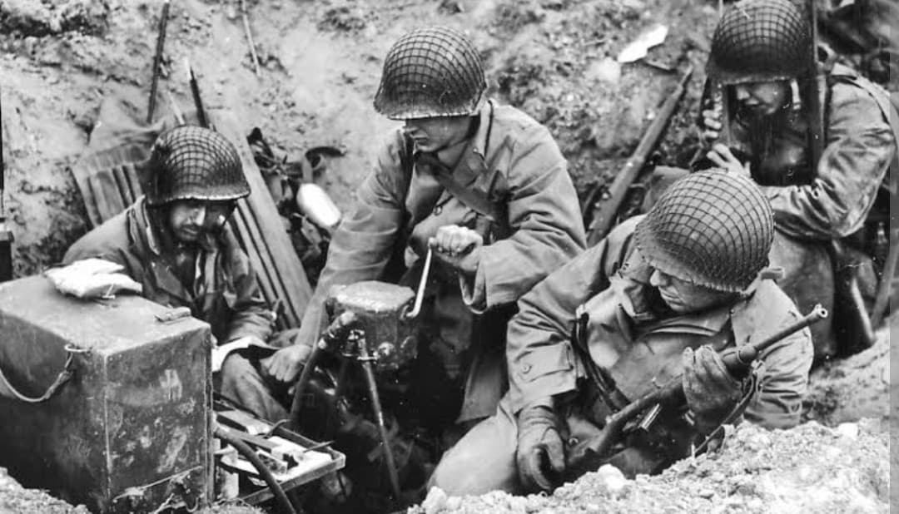
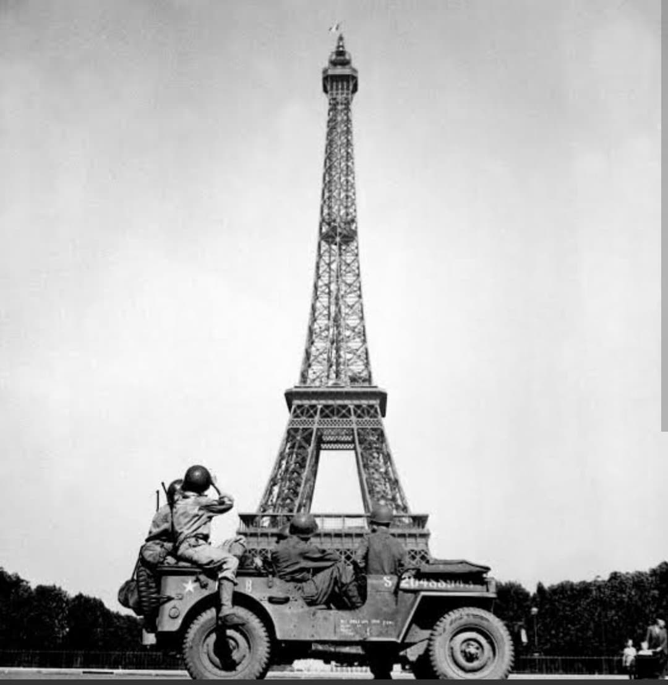

Première division à débarquer sur Utah Beach et libératrice de Paris aux côtés de la 2e DB

La 4th Infantry Division de l'armée américaine, surnommée la “Ivy Division” (Division du Lierre), est l'une des unités les plus illustres du théâtre d'opérations européen durant la Seconde Guerre mondiale.
Elle est la toute première division d'infanterie américaine à poser le pied sur le sol normand le matin du 6 juin 1944 sur la plage d'Utah Beach. Elle jouera ensuite un rôle crucial dans la libération de la presqu'île du Cotentin, la libération de Paris et les terribles combats de la forêt de Hürtgen.
Formée en décembre 1917 durant la Première Guerre mondiale, la division tire son nom du mot anglais ivy (lierre), mais aussi du chiffre romain **IV** (quatre).
Son insigne d'épaule est composé de quatre feuilles de lierre vert pointant vers les quatre points cardinaux. Sa devise officielle est “Steadfast and Loyal” (Inébranlable et fidèle).

Le jour J, le 8e régiment d'infanterie de la 4th Division aborde la plage d'Utah Beach à 06h30. En raison des courants marins, les péniches de débarquement touchent terre à environ 2 kilomètres au sud de la zone initialement prévue, dans un secteur nettement moins défendu.
Prenant rapidement la mesure de la situation, le général adjoint de la division, **Thodore Roosevelt Jr.** (fils de l'ancien président), lance la célèbre formule : “We'll start the war from right here!” (Nous commencerons la guerre d'ici même !). Grâce à cette décision rapide et à la jonction avec les troupes aéroportées (101st et 82nd Airborne), la division établit la tête de pont avec des pertes très réduites par rapport à Omaha Beach.

Après le débarquement, la 4th Infantry Division progresse vers le nord du Cotentin pour sécuriser le port en eau profonde de **Cherbourg**, capturé à la fin du mois de juin 1944. Elle s'engage ensuite dans les combats meurtriers du bocage normand.
Après la percée de l'Opération Cobra en juillet, la division fonce vers l'est. Le 25 août 1944, elle entre dans **Paris** aux côtés de la 2e Division Blindée française du général Leclerc pour libérer la capitale.

En novembre 1944, la division est plongée dans la **bataille de la forêt de Hürtgen**, l'un des affrontements les plus sanglants et éprouvants de toute la campagne d'Europe du Nord-Ouest. Dans des conditions climatiques effroyables et face à des positions fortifiées allemandes, la division subit plus de 4 000 pertes en quelques semaines.
En décembre 1944, alors qu'elle se réorganise au Luxembourg, elle est frappée de plein fouet par la contre-offensive allemande des Ardennes, mais réussit à maintenir fermement le flanc sud de la ligne alliée.
En 199 jours de combat intensif en Europe, la 4th Infantry Division totalise plus de **22 600 pertes** (dont environ 4 090 tués au combat). Cinq de ses hommes ont été décorés de la Medal of Honor, dont le général Theodore Roosevelt Jr.
Aujourd'hui encore, la 4th Infantry Division est une unité d'active prestigieuse de l'armée américaine, toujours identifiable à son célèbre insigne aux feuilles de lierre.
Page du Musée HOP WW2 – Section États-Unis & Unités d'Élite